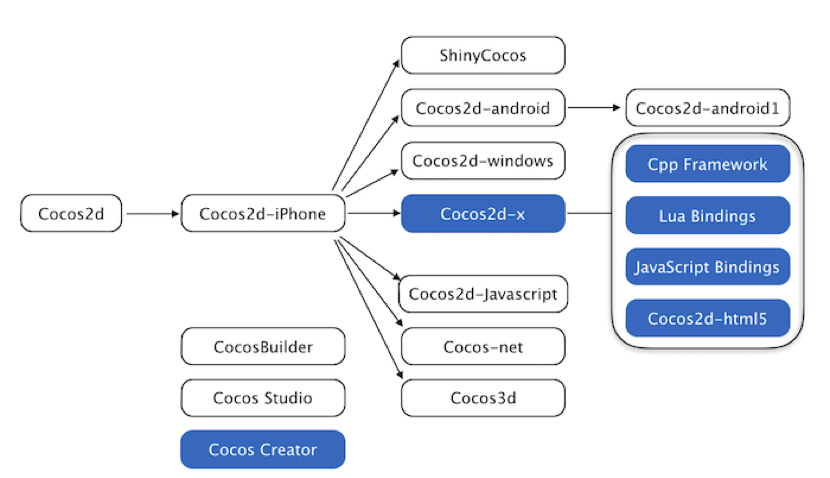
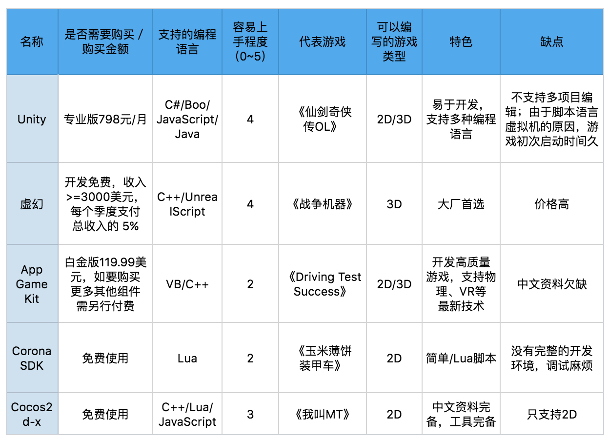

- 00 开篇词 跟我学，你也可以开发一款游戏！.md
- 复习课 带你梳理客户端开发的三个重点.md
- 第10讲 如何载入“飞机”和“敌人”？.md
- 第11讲 如何设置图像的前后遮挡？.md
- 第12讲 如何设置精灵的变形、放大和缩小？.md
- 第13讲 如何设置淡入淡出和碰撞检测？.md
- 第14讲 如何制作游戏资源包和保存机制？.md
- 第15讲 如何载入背景音乐和音效？.md
- 第16讲 如何在游戏中载入UI和菜单？.md
- 第17讲 如何用鼠标和键盘来操作游戏？.md
- 第18讲 如何判断客户端的网络连接？.md
- 第19讲 如何嵌入脚本语言？.md
- 第1讲 游戏开发需要了解哪些背景知识？.md
- 第20讲 脚本语言在游戏开发中有哪些应用？.md
- 第21讲 如何使用脚本语言编写周边工具？.md
- 第22讲 如何选择合适的开发语言？.md
- 第23讲 如何定制合适的开发协议？.md
- 第24讲 不可忽视的多线程及并发问题.md
- 第25讲 如何判断心跳包是否离线？.md
- 第26讲 如何用网关服务器进行负载均衡？.md
- 第27讲 如何制作游戏内容保存和缓存处理？.md
- 第28讲 热点剖析（一）：HTML5技术是如何取代Flash的？.md
- 第29讲 热点剖析（二）：如何选择一款HTML5引擎？.md
- 第2讲 2D游戏和3D游戏有什么区别？.md
- 第30讲 热点剖析（三）：试试看，你也可以编写一款HTML5小游戏！.md
- 第31讲 热点剖析（四）：安卓端和苹果端游戏开发有什么区别？.md
- 第32讲 热点剖析（五）：如何选择移动端的游戏引擎？.md
- 第33讲 热点剖析（六）：AR和人工智能在游戏领域有哪些应用？.md
- 第34讲 热点剖析（七）：谈谈微信小游戏的成功点.md
- 第35讲 热点剖析（八）：谈谈移动游戏的未来发展.md
- 第36讲 热点剖析（九）：谈谈独立开发者的未来发展.md
- 第3讲 游戏的发动机：游戏引擎.md
- 第4讲 底层绘图接口的妙用.md
- 第5讲 构建游戏场景的武器：地图编辑器.md
- 第6讲 从0开始整理开发流程.md
- 第7讲 如何建立一个Windows窗体？.md
- 第8讲 如何区分图形和图像？.md
- 第9讲 如何绘制游戏背景？.md
- 结束语 做游戏的过程就像是在雕琢一件艺术品.md
- 课后阅读 游戏开发工程师学习路径（上）.md
- 课后阅读 游戏开发工程师学习路径（下）.md
第32讲 热点剖析（五）：如何选择移动端的游戏引擎？
上一次，我和你探讨了[移动端游戏的一些区别和特点]，我特别介绍了libGDX这款游戏引擎。因为这款游戏引擎是多平台的，且各种第三方工具都很完备，比如物理引擎、特效、2D骨骼动画工具等等，所以libGDX目前已经被越来越多的公司和个人接受和使用。
在苹果端，我们也讲到了，苹果公司推出的SpriteKit游戏开发框架，在苹果体系下，使用XCode就可以很方便地使用SK工具开发出好玩的2D移动游戏。
从目前最新的游戏引擎的趋势看，一次编码、到处兼容已经成为了市场的主流，多种语言、一次打包（多种语言都可以编写相同的代码，然后配合打包成目标平台的游戏），也是程序员喜闻乐见的一种编程方式。
如果你准备编写移动端的游戏，或者你已经是app程序员，有编码经验但是想要转型游戏程序员，那么你要对移动端的游戏引擎有一定的了解，才能开始你的游戏编程之旅。
五种常见的移动端引擎
我今天介绍五种常见的移动端引擎，分别是Unity、虚幻、App Game Kit、Corona SDK、Cocos2d-x。
Unity
和虚幻之类有名的游戏引擎一样，Unity最初是从3D网页引擎的样子进化成现在这样的。Unity普通版是400美元，但是Pro版本要1500多美元，但是如果你购买Pro版的话会得到更强大的功能和编辑器等等。Unity不仅支持电脑和移动端多平台，还支持游戏机甚至掌上游戏机，比如我们熟知的PS系列和PSV之类的，比如《杀出重围》《神庙逃亡》等，都是使用Unity引擎制作的。
Unity的编程可以使用C#、JavaScript、Java、Boo等脚本语言。对于Flash，Unity已经放弃支持这个平台了。事实上，Unity在版本4.0之前是可以支持将游戏转换为Flash平台的，4.0后已经不支持转成Flash游戏了。至于Flash被各家放弃的原因我在之前的文章已经讲过，这里就不多说了。
Unity拥有大量的所见即所得的编程界面开发工具。比如支持3D骨骼和动画的导入、贴图的材质可以转换为自身的U3D格式等等。
在底层方面，它支持OpenGL以及DX系列。它自带的物理引擎、粒子系统，性能也极其高效，还支持网络系统，所以你可以使用Unity来编写单机或者网络游戏。
虚幻
这个大佬级别的引擎，你一定不陌生。它现在已经支持在移动平台使用了。虚幻有免费版本和付费版本，但是只有付费版本你可以获取引擎全部的C++源代码。最为可贵的是，出品虚幻的Epic公司有发布完整的教学视频，而开发人员也能从网络社区获取大量的学习资源。
这款引擎不仅仅在游戏引擎技术方面比较优秀，运营方面、市场方面，在行业内都是属于前列。耳熟能详的《蝙蝠侠》《阿卡姆之城》等等用的都是虚幻引擎。
虚幻引擎有完整的数据属性编辑功能。关卡设计人员可以自由地对游戏中的物件进行设置，也可以通过脚本编写的形式进行优化设置。关于关卡编辑器的功能，我在[之前的文章]中有详细介绍。
虚幻的资源管理器可以进行快速准确地查找、观看，并对游戏开发中的各种资源进行整理组织。地图编辑器可以让美术开发人员自由地对地形进行升降调节。更强大的是，它可以通过带有alpha通道的笔刷对地图的层进行融合修饰，可以在地图编辑中生成碰撞数据和位移贴图，你看到的可以说是游戏场景的一种演示版也不为过。
它的编辑器还为美术制作人员提供了完整的模型、骨骼和动画数据导出工具，并可以编辑游戏事件所需要的声音文件、剧情脚本。
App Game Kit
我个人认为，App Game Kit 比较适合刚进阶的游戏开发者。这款引擎使用非常容易上手，你可以去它的官网看最新发布的消息。有一款Driving Test Success的应用就是使用AGK编写的，当然这是一个商业化的付费引擎。这款游戏引擎也支持树莓派上编程，可谓是各个平台都兼容。
Corona SDK
如果你深入学习过或者接触过移动端游戏开发的话，你一定知道这款游戏引擎。这款引擎不仅仅是跨平台支持，甚至还支持Kindle电子书这类的平台。
它的编程语言为Lua，我们在之后的文章会介绍Lua和C语言的绑定，我在这里只是简单说一下。相对于别的语言来说，Lua更加轻量级，对初学者来说也更容易上手。
Corona SDK的客户除了个人，也有很多知名的大厂，比如日本的南梦宫等等。当然收费也并不便宜，专业版就接近600美元，企业版接近1000美元，当然如果是企业用户的话，这点投入比之自己编写引擎来说，划算得多。
Cocos2d-x
国内的朋友对这款引擎非常熟悉，与此同时，它的同胞兄弟Cocos2d系列，我也在[前面]做过一些介绍。
很多人以为Cocos2d-x是中国人编写的。事实上Cocos2d的作者是一个叫Richardo的阿根廷人。Cocos是在阿根廷的一个叫Los Cocos的地方诞生的。由于Richardo的学习曲线是汇编、C/C++、Python，所以这个时候Cocos版本是Python的。他们将研究成果在PyCon 2008和EuroPython 2008上都做了展示。
2008年的时候，他们抓住iPhone发布的机遇，在2008年6月宣布支持iPhone，然后沿用了Python版本的Cocos2d相同的设计思维，用Object-C重新编写了iPhone版的Cocos2d并且发布了0.1版。智能手机刚起步的时候，iPhone用户数量明显多过安卓，所以Cocos2d刚开始就笼络了大批iPhone开发者，随后又有了安卓版。所以，现在用Cocos2d引擎编写的游戏，几乎随处可见。
在2009年的时候，Cocos团队编写了Cocos2d的World Editor，Cocos2d-Python。这个编辑器用起来非常方便，随后Cocos2d的各种平台和各种语言的移植版本也逐渐被各类程序员拿去开发并且出现在开源社区。
我们可以看到几个主流语言的绑定版本：
Ruby版本：ShinyCocos
安卓版本：Cocos2d-Android
.NET 版本：CocosNet（Mono based）
Windows版本
这里有一幅来自它的官网的产品分支图，你可以比较清晰地了解Cocos2d的各个分支。

- 同时经过几年的努力，Cocos系列也拥有了非常优秀的编辑器，例如SpriteSheet Editors（精灵序列图编辑器）、Particle Editors（粒子编辑器）、Font Editors（字体编辑器）、Tilemap Editors（瓦片地图编辑器）。CocosStudio这款工具集套件于2012年发布，它是Cocos2d-x团队官方推出的游戏开发工具。CocoStudio根据开发团队自己在游戏开发中的经验，为移动游戏开发者和团队定做了这么一套集成工具，用意在降低游戏开发的门槛，提高开发效率；当然最主要还是为了Cocos2d-x占领游戏引擎市场。
如何选择引擎？
今天我介绍了这五款引擎，在开发的过程中，究竟该如何选择呢？如果接触游戏开发不久的话，你肯定还是会有点懵。 其实只要有选择，就有取舍，你只要明确自己的需求，然后结合自己的需求和引擎自身的特性，来对比选择就可以了。 这里我把这五种引擎的一些特点，总结了一下，列了一个表格。你在选择的时候，可以作为参考。

首先，如果我们只是编写2D游戏，那么Cocos系列一定符合你的预期，而且能方便地制作出跨平台的游戏。
如果我们编写的是3D游戏，如果是商业购买多话，那么Unity和虚幻一定是不错的选择。在财力足够的情况下，选择这两个大厂级别的游戏引擎，一定会让你满意。
但是如果你需要编写休闲的、规模不大的游戏，那么Corona、App Game Kit就可以用。
小结
我们总结一下今天的内容。
首先，移动平台的游戏引擎有一个最大的特点，游戏引擎已经逐渐演变成跨平台能力的游戏引擎，如果不这么做，很块就会被别的竞争对手所淘汰，我们先前讲到的HTML5游戏引擎，都可以编译出不同的跨平台的目标代码。
其次，移动游戏引擎，要挑选适合自己的才行，引擎规模有大有小，做出来的游戏质量也都不同。游戏开发大厂，可以选择虚幻引擎；中等公司可以选择Unity；个人团队可以选择Cocos2d或者App Game Kit；个人开发者或者轻量级开发可以选择Corona SDK。
最后，给你留一个小思考题吧。
如果用移动平台的游戏引擎编写移动应用，是否可以实现呢？
欢迎留言说出你的看法。我在下一节的挑战中等你！
© 2019 - 2023 Liangliang Lee. Powered by gin and hexo-theme-book.